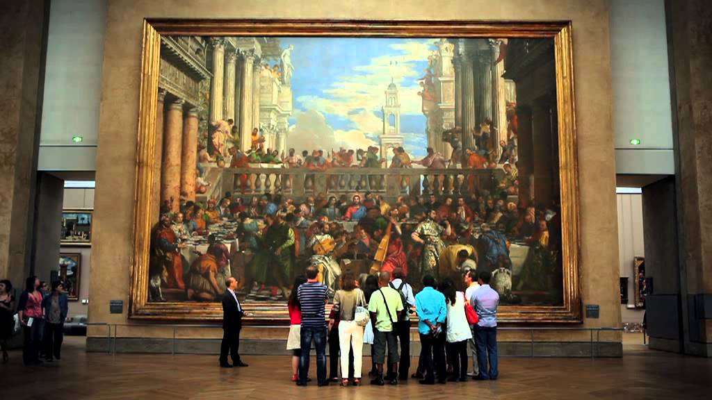

Nocturne au musée du Louvre

Tous les vendredis, le musée du Louvre offre un moment de magie à ses visiteurs au milieu de ses collections. Au programme de ces nocturnes hebdomadaires, de nombreuses activités pour petits et grands.
Le 24 novembre 2023, mes camarades de l’IUT et moi avons pu participer à l’une de ces soirées. Nous avons décidé de présenter certains tableaux du célèbre musée au filtre de l’IA. Au moment où cette technologie prend une place active dans notre société, avec par exemple ChatGPT, DALL-E ou encore Mistral AI, il est intéressant de pouvoir approfondir l’utilisation de ces outils permettant de générer des éléments en lien, ici, avec l’art, par exemple.
De plus, ce sujet fascinant qu’est l’intelligence artificielle est plus ou moins en lien avec notre formation en science des données. Explorer ce domaine où se mêlent mathématiques, informatique et données était particulièrement captivant.
Qu’avons nous fait ?
L’objectif final était de pouvoir le 23 novembre 2024, présenter une œuvre en rapport avec l’IA au visiteur de la nocturne.
Pour cela, 2 mois, auparavant, nous avons décidé de choisir un sujet d’intelligence artificielle qui pouvait coïncider avec une œuvre du musée.
Après de longues recherches passionnantes, nous avons choisi de présenter les GAN (Generative adversarial networks).
C’est une classe d’algorithmes d’apprentissage non supervisé. Ils permettent de générer des images avec un fort degré de réalisme. Nous avons trouvé la technologie et les méthodes très intéressantes, d’autant plus qu’elles aboutissent à des applications concrètes, telles que la génération d’images artistiques.
Cependant, ces algorithmes sont utilisés dans bien d’autres domaines tels que la médecine ou encore la finance.
Mais concrètement, comment ça marche ?
Qu’est-ce qu’un GAN ?
Afin de comprendre comment il fonctionne, on peut imaginer un jeu entre deux joueurs :
L’artiste (Générateur) : L’objectif du joueur est de créer des images qui se rapprochent le plus de la réalité. Pour cela, il apprend de ses erreurs et réessaie en continu d’obtenir l’œuvre la plus proche du réel.
Le juge (Discriminateur) : L’objectif de ce joueur est de vérifier si les œuvres réalisées par l’artiste peuvent paraître réelles ou si elles sont encore trop fausses. Pour cela, il compare les œuvres de l’artiste à des œuvres réelles faites par des peintres.
Tant que l’image n’est pas accepté par le juge, l’artiste continue à produire des œuvres. Voilà, le fonctionnement d’un GAN ou deux réseaux de neurones se font concurrence. De cette manière, il est possible de créer des images, des vidéos ou d’autres contenues de très bonnes qualités.

Présentation au public
Nous avons décidé de présenter au public le travail d’Obvious. Ce collectif de chercheurs, d’artistes travaille avec des modèles d’apprentissage profond pour explorer le potentiel créatif de l’intelligence artificielle. Ils ont justement utilisé des GAN pour générer une famille de 11 tableaux (la famille Belamy).
Un portrait a retenu notre attention, le portrait d’Edmond de Belamy. Ce tableau est une impression sur toile qui est rentrée dans l’histoire de l’art moderne. Cela, car c’est la première œuvre d’art produite par un logiciel d’intelligence artificielle à être présentée dans une salle des ventes. Pour couronner le tout, il a été vendu 432 500 dollars chez Christie’s le 25 octobre 2018.
De plus, ce tableau est assez troublant. Il est très difficile à première vue de déterminer qu’une machine a pu en être l’auteur.
Obvious à utiliser un GAN, en l’entraînant sur 15 000 portraits classiques réalisés entre le 14e et 20e siècle. L’algorithme devait donc produire un tableau en sortie qui serait très ressemblant aux portraits classiques.
Nous avons décidé de comparer le portrait d’Edmond de Belamy à une œuvre du Louvre se trouvant dans la salle 846 de l’aile Richelieu du musée. C’est une peinture datant du 17e siècle réalisée par Jean Bray, peintre néerlandais. Les tableaux ont quelques points en commun : le fond noir, un homme au centre du tableau, le col blanc avec une veste noir.
Les visiteurs étaient agréablement surpris par le réalisme du portrait d’Edmond de Belamy, mais aussi par le prix de vente de l’œuvre. Ils pensaient pouvoir reconnaître la réalisation d’une IA.